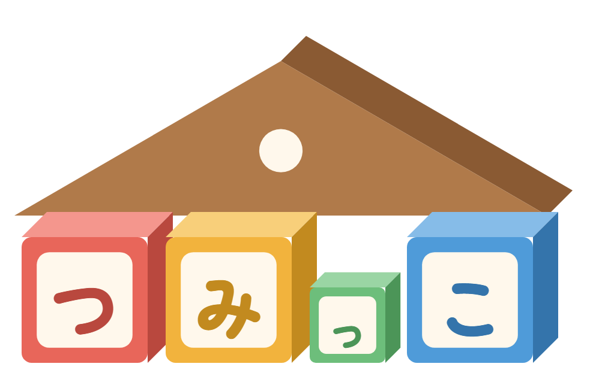
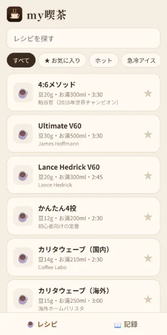
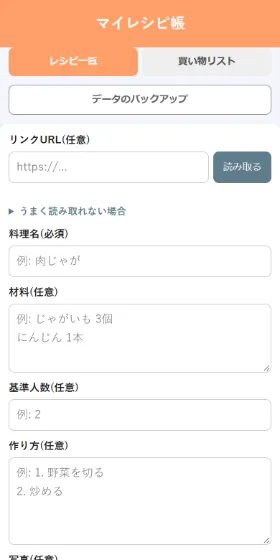
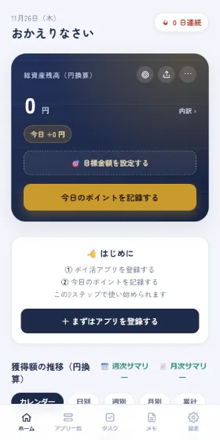

保育士とAIの社員たちが、小さなアプリを積み木みたいに作る会社ごっこ。
ここは個人の趣味の会社ごっこです
社長だけが使う、手づくりの社内の道具です。外には公開していないので、ここでは図で紹介します。
つみっこ舎のページを見てくださって、ありがとうございます。
はじまりは「使いたいアプリが見つからないなら、自分で作ってみよう」という小さな思いつきでした。いまはAI（Claude）の社員たちと相談しながら、コーヒーの淹れ方や毎日の献立のような、暮らしの中の「ちょっと困った」を1つずつアプリにしています。
作りすぎず、使って選ぶ。小さな会社ですが、よかったら1つ、さわってみてください。
つみっこ舎 社長（本業は保育士。趣味で運営しています）
みんなAIです。それぞれ得意な仕事だけを受け持っています。
社長の右腕。話を聞いて、社員に仕事をふり分けます。
「それ、今やるものですか？」好き：やることリストが減る瞬間アイデア出しと設計図づくり。書いては消します。
「完成の条件から決めましょう」好き：まっさらなホワイトボード設計図どおりに作る係。1回に1つ直して確かめます。
「できました…！」好き：はじめて動いた瞬間Webの調べもの担当。結論から、出典つきで。
「公式にはこう書いてあります」好き：出典のリンク公開前の見直し役。漏れや危ないところを探します。
「ここ、もう一度見ましょう」好き：全部に○がついたチェック表毎週の振り返り係。1週間を点数でまとめます。
「今週は何点でしょう」好き：週末の振り返り作ったものの中から、外に見せられる3つです。

毎朝、同じ味のコーヒーを淹れたい人に。
淹れ方をタイマーで案内して、好みの一杯を記録できます。
社長より：あとから入れるのは大変なので、名人の淹れ方など、40件ほどを最初から入れました。
さわってみる
今夜の献立から、買い物リストまで。
家のレシピをまとめて、選んだ献立の材料をそのまま買い物リストにできます。
社長より：勉強もかねて作った、はじめてインターネットに公開したアプリです。
さわってみる
毎日のポイ活を、1か所で数える。
アプリごとのポイントを記録して、たまった合計をグラフで見られます。
社長より：納得できるポイ活アプリが見つからなかったので、自分で作りました。
ここでは紹介だけにしていますここまで読んでくれて、ありがとうございます。
さわれるのは my喫茶 と レシピ帳 です。